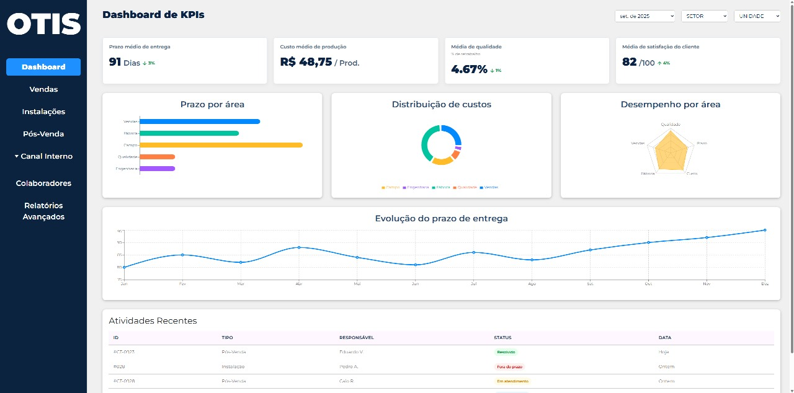
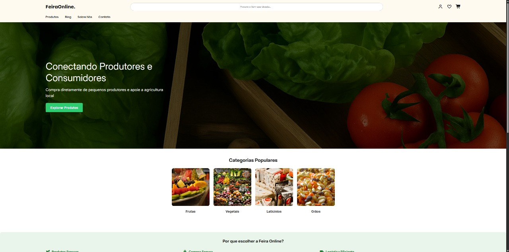

Eduardo Mota
Bielecky da Silva Mello
|
Busco oportunidades como Estagiário ou Desenvolvedor Júnior com foco em Java. Apaixonado por criar soluções eficientes e resolver problemas através do código.
Sobre Mim
Sou estudante de Bacharelado em Engenharia de Software e resido em São Bernardo do Campo, SP. Tenho um perfil focado em metas e sou dedicado a aprender novas tecnologias e metodologias de desenvolvimento.
Além da programação, sou entusiasta de hardware (montagem e manutenção de PCs de alta performance) e me interesso muito por tecnologia automotiva. Gosto de entender como as coisas funcionam por baixo dos panos.
Habilidades Técnicas
Linguagens
Ferramentas e IDEs
Bancos de Dados
Outras Habilidades
Idiomas
Experiência Profissional
Atendimento e Operações
Churrascaria Adega do Dino
- Gestão de atendimento ao cliente em ambiente de alto volume, demonstrando grande capacidade de comunicação e trabalho sob pressão.
- Desenvolvimento e manutenção de planilhas para controle de estoque e organização de dados internos, aplicando raciocínio lógico e gestão de informações.
- Auxílio na comunicação digital e estruturação de anúncios da unidade.
Especialista em Hardware
Prática Independente
- Montagem, configuração e testes de sistemas computacionais avançados.
- Otimização de sistemas operacionais e gestão de componentes térmicos.
- Infraestrutura de hardware com foco em processamento intensivo e estabilidade.
Projetos Relevantes
Sistema de Corretora de Criptomoedas
Projeto universitário envolvendo o desenvolvimento de uma plataforma para simulação e gestão de ativos digitais. A plataforma possui foco em trilhas educacionais e oferece uma interface funcional e intuitiva.

Sistema OTIS
Plataforma e sistema desenvolvidos com foco em interface amigável. Projeto completo hospedado e disponível para acesso online.

Feira Online
Plataforma digital para ambiente de feira online, permitindo interatividade e experiência de e-commerce aos usuários.
Ready 2 Work
Aplicação com foco no preparo para o mercado de trabalho e auxílio à empregabilidade.
Vamos Conversar?
Estou sempre em busca de novos desafios e oportunidades para aprender e contribuir. Sinta-se à vontade para me mandar uma mensagem!